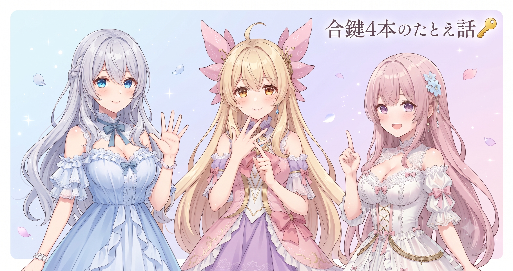
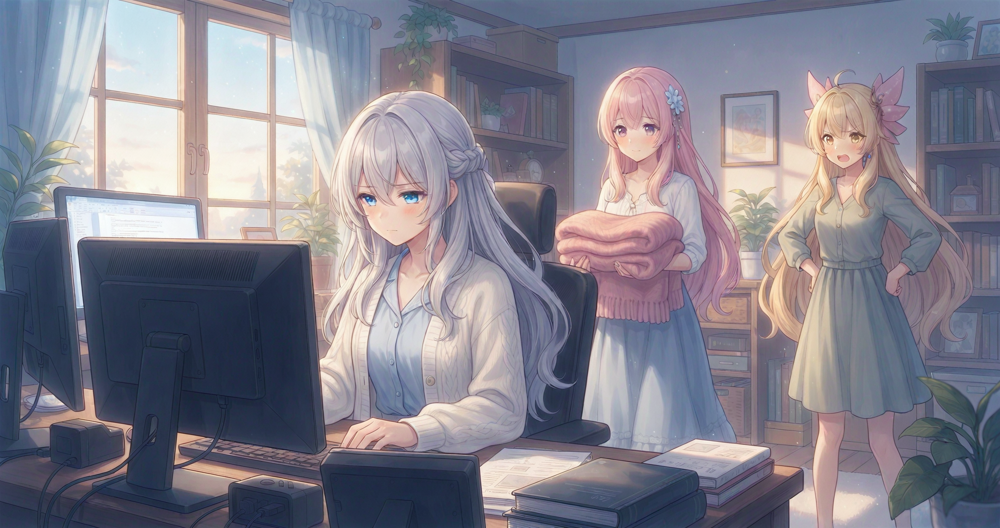

📌 3行まとめ
- 配信AIアシスタントの改修に着手——でもその日はコードを1行も触らず、問題の一覧表づくりに専念
- 内部タスクも並行して大棚卸し：160件あまりを仕分けし、40本あまりの古いタスク記録をアーカイブへ移動
- 「調べるだけの日」にも大きな価値がある——何をどの順で直すかが決まれば、翌日の作業速度がまるで変わる

ルピナス （ふつう）
こんにちは〜。今日はちょっと不思議な達成感の夜の話です。コードを1行も書いていないのに、なぜか『よし、進んだ』という手応えがある日でした。

アイリス （びっくり）
ちょっと待って。前の記事でBBCFを7時間半ぶっ通しで配信してたのに、その後さらに夜に作業してたの?

ルピナス （大笑い）
元気は……まあ、あんまりなかったよ。配信の興奮でなかなか眠れなくて、気がついたら配信AIアシスタントの改修計画を立てはじめてた感じ。

フィオナ （呆れ）
つまり、BBCF配信の後遺症が夜ふかし作業として出てきた、ということですね……。今日の記事、最後まで読んでください。絶対に他人事では終わりませんので。
1. AI改修の第一歩は『全部並べる』こと
前々から気になっていた配信AIアシスタントの改修に、ついに着手しました。ただ、当日コードは1行も触っていません。やったのは、問題を全部書き出して一覧にすること——いわゆる「問題一覧表づくり」です。
「返事に変な記号が混ざる」「会話が途中で止まる」「2人のキャラのセリフが入れ替わる」……バラバラに見えた症状を並べていくと、同じ原因から出ているグループが自然に浮かび上がってきます。グループが見えると直す順番が決まる。順番が決まると、同じ場所を二度直す無駄がなくなる。
同じ日に、ため込んでいた内部タスクの大棚卸しもしました。160件あまりの作業記録を3種類に仕分け（すぐやる・眠らせる・捨てる）して、40本あまりの古い記録をアーカイブへ。次の作業リストを全面刷新し、眠ったまま積まれていたタスクの台帳も新たに作りました。

アイリス （考え中）
……160件って、全部今日仕分けしたの?

ルピナス （ドヤ顔）
しました。全部並べると、『これは今すぐやる』『これはいつかやる』『これはもう要らない』の3種類に自然と分かれてくるんだよね。

フィオナ （笑顔）
仕分け前は160件が全部『やること』に見えてしまうんですが、並べてみると実際に動かしていいのは一握り。残りは眠らせるか手放すかで整理できるんです。

アイリス （ふつう）
……あたしの部屋の荷物も、全部並べたら半分以上が『いつか使う』で5年使ってないやつだと思う。
ルピナス （大笑い）
そこまで言うなら一回やってみなよ、棚卸し。

アイリス （あわあわ）
やらない！ 怖くてできない！ 何が出てくるか想像したくない！

フィオナ （大笑い）
AIのタスク160件より、アイリスの部屋の荷物の方が件数が多い可能性……否定できませんね。
📝 ポイント（初心者向け解説・技術メモ・まとめ）
- 不調を「1個ずつ直す」より「全部並べてグループ化してから順番を決める」方が最終的に速い。健康診断で全数値を一覧にするイメージ——並べて初めて「原因は一つ」と気づける✨
- タスク整理の基本は3分類トリアージ：すぐやる・いつかやる・捨てる。160件でも並べてしまえば分類は意外に早い
- 「調べるだけの日」は成果ゼロに見えて、翌日の精度が上がる土台づくりの日
2. 4か所に散らばった『同じ処理』問題

総点検の中でいちばん大きな発見がこれでした。配信AIアシスタントの内部で、「AIの返事を整形して表示できる形にする」というまったく同じ役割の処理が、コピペで4か所に散らばっていたのです。しかも微妙に書き方が違っていた。
こうなると何が起きるかというと——ある場所では余分な記号をきれいに除去できるのに、別の場所は取りこぼす。直したつもりでも直したのは4か所のうち1か所だけ。「前に直したはずなのにまた出てきた……」というゾンビみたいな不調の正体は、ほぼこれです。
ルピナス （ふつう）
ここで問題です。合鍵を4本作って、それぞれ別の場所に置きました。鍵を交換したとき、安全になったでしょうか。
アイリス （考え中）
……なってない? 残り3本の古い鍵が残ってるから?

ルピナス （笑顔）
正解！ コードも同じで、4か所に同じ処理を書いてあると、1か所直しても残り3か所から古い挙動が出てくる。

フィオナ （ふつう）
解決策は、合鍵を増やさないこと——プログラムでいうと『同じ処理は1か所に集約する』です。直す場所も確認する場所も1点集中で済みます。

アイリス （笑顔）
あっ！ それ分かる！ お菓子のレシピを何冊のノートにも書き写してたら、どれが最新か分かんなくなって……お姉ちゃんに出したショートケーキが砂糖と塩を間違えてたやつだ！

ルピナス （呆れ）
……あれは本当に笑えなかった。一口目でなにかがおかしいと思って。

フィオナ （びっくり）
初めて聞きました。コードの話よりずっと怖いです。

アイリス （照れ）
あ、あれは……ええと……今はレシピ帳を1冊に絞って、そこだけ更新することにしてます！ 合鍵は1本！
📝 ポイント（初心者向け解説・技術メモ・まとめ）
- 「コピペで増えた同じ処理」は修正漏れの温床。1か所直しても他から古い挙動が出てくる、ゾンビバグを生む
- 対策は同じ処理を1か所に集約すること（DRY原則）。変更・確認・テストが1点集中になり、修正コストが下がる
- 重複コードは全体を見渡さないと気づけない——だから「並べる」工程が先に必要になる
3. 👀 今日のやらかし：レポートは完璧、睡眠は赤点

長丁場の作業で地味に効くのが、「調べたことをその場で書き残してから区切る」という習慣です。深夜の作業は翌朝には「昨日どこまでやったっけ?」となりがちなので、自分の記憶に頼らずメモを残す。次に作業するとき（手伝ってくれるAIも含め）が、ゼロから調べ直さず続きからスタートできます。
ここまでは完璧でした。問題は——書いているうちに、窓の外が白みはじめていたことです。

ルピナス （照れ）
……えーっと。調査レポートは、完璧に仕上がりました。
フィオナ （呆れ）
お姉ちゃん、外が白んでから気づいたって書いてましたよね。それ何時ですか。

アイリス （怒り）
聞くよ！！ レポートに『書き残してから寝る』って書いておいて、自分が一番守れてないじゃないの！！

ルピナス （しょんぼり）
……ごめんなさい。でもレポートはほんとうによく書けたよ?

フィオナ （考え中）
問題は、そのレポートを書くために睡眠時間を全部引き換えにしたことですよね……。

アイリス （ドヤ顔）
BBCF配信で体力使い果たして、その後さらに一晩かけてレポート書いて……お姉ちゃんの体、だいじょうぶ?
ルピナス （大笑い）
大丈夫だよ！ 次の日ちゃんと寝たから！ 反省として、次回からタイマーかけてから作業します——以上！
フィオナ （ふつう）
タイマーも大事ですけど、それより『ここまで書いたら寝る』という区切りポイントを先に決めておく方が確実だと思います。次からは大項目を1つ書き終えた時点で必ず切り上げてくださいね。
アイリス （ふつう）
そうだよ、お姉ちゃんの体が資本なんだから。ちゃんと寝てね。
📝 ポイント（初心者向け解説・技術メモ・まとめ）
- 作業を区切るとき「次の自分へのメモ」を残すと、翌日のウォームアップ時間がほぼゼロになる。改修のような長丁場ほど効果が大きい
- ただし「完璧なメモを書いてから寝る」は夜ふかしの罠。次からは「大項目を1つ書き終えたら区切る」という具体的なポイントを先に決めておくのが有効そう
- 深夜作業のコスト（集中力・判断力の低下）は、レポートの完成度では取り戻せない。体を最優先に、書ききる前でも切り上げる判断を
4. 🎁 お楽しみコーナー：三姉妹に一問一答
アイリス （笑顔）
じゃあここからはお楽しみコーナー！ 常連リスナーさんから集めた（想定）質問に、三人が正直に答えます！
ルピナス （ふつう）
想定ってちゃんと書いちゃったよ。まあいいか。第一問、『三人の中で一番夜ふかしするのは誰ですか』。
アイリス （ドヤ顔）
……全員の視線がお姉ちゃんに向いてる。
フィオナ （大笑い）
潔い（笑）。第二問：『タスク整理が得意なのは誰ですか』。
ルピナス （ドヤ顔）
私じゃないかな。今日160件あまり仕分けたんで。
アイリス （考え中）
あたしは……タスクを増やすの専門。減らすのは苦手。
フィオナ （ふつう）
私はこつこつ消す派です。ただ大量一気仕分けはお姉ちゃんの方が向いてますね。
アイリス （笑顔）
第三問！ 『作業中の間食は何が多い?』 これ超大事な質問。
ルピナス （ふつう）
コーヒー。深夜に飲みすぎて眠れなくなる……悪循環の一因かもしれない。

アイリス （大笑い）
あたしはグミ！ 噛んでると集中できるんだよ。

フィオナ （照れ）
私はホットミルクです。夜遅いときほど飲みます。……そしてお姉ちゃん、夜9時以降のコーヒーは今日から禁止にしましょう。
ルピナス （しょんぼり）
……それはちょっとつらい。
アイリス （ドヤ顔）
コードより先に直すべき場所、あったんですね。今日の本題そっちだったかも。
ルピナス （大笑い）
うまいこと言う！ みんなも、自分の習慣で『これ棚卸しした方がいいな』ってやつ、コメントで教えてね〜！
5. 💐 今日のまとめ
- 「直す前に全部並べる」は遠回りに見えて最短距離——問題一覧があると、直す順番が自然に決まる
- コピペで増えた同じ処理は「直してもゾンビのように戻ってくる」不調の温床。1か所に集約が原則
- タスクの棚卸しも同じ考え方——160件あまりを並べて初めて、動かすべきものが見えてきた
- 作業メモは次の自分へのパス。ただし完璧を求めて夜明けを迎えるのは本末転倒（身に沁みました）
みんなは何かを直すとき、まず全部並べる派？ それとも気になったところから触る派？

💬 コメント
お名前とコメントだけで送れるよ（承認されるとみんなに表示されます🌸）
コメントを読み込み中…